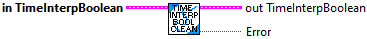
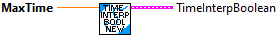

Add a sample to the buffer.
Inputs:
- In TimeInterpBoolean -- Time Interp data cluster
- Time -- The time stamp of the sample (seconds)
- Value -- The boolean value
Outputs:
- out TimeInterpBoolean -- Updated Time Interp data cluster

Removes samples older than our current history size.
Inputs:
- In TimeInterpBoolean -- Input data cluster.
Outputs:
- Out TimeInterpBoolean -- Updated data cluster.
- Error -- Returns TRUE if an error occured.

Removes all samples from the history buffer.
Inputs:
- In TimeInterpBoolean -- Input data cluster.
Outputs:
- Out TimeInterpBoolean -- Updated data cluster.

Sample the buffer at the given time.
This retuns the value sample at or before the requested time. (boolean values can't be interpolated.)
Inputs:
- TimeInterpBoolean -- Input data cluster
- TimeStamp -- Time at which to sample (seconds)
Outputs
- OutputBoolean -- Sampled boolean. This is an exact value if there is a sample in the buffer at this time. Otherwise it is the next previous sample.
- IsPresent -- Returns TRUE if the buffer contains data as far back as TimeStamp.

Create the data cluster for a TIME_INTERPOLATABLE_BOOLEAN.
The TimeInterpolatableBuffer provides an easy way to estimate past measurements. One application might be in conjunction with the DifferentialDrivePoseEstimator, where knowledge of the robot pose at the time when vision or other global measurement were recorded is necessary, or for recording the past angles of mechanisms as measured by encoders.
The TIME_INTERPOLATABLE_BOOLEAN stores and returns boolean values.
Inputs:
- Max Time -- The maximum time (seconds) of data to store in the buffer.
Outputs:
- Time Inter Boolean -- Created data structure cluster

Set the maximum time period that should be stored in the buffer
Inputs:
- In TimeInterpBoolean -- Input data cluster.
- Max Time -- Maximum time period to store in the buffer (seconds)
Outputs:
- Out TimeInterpBoolean -- Updated data cluster.